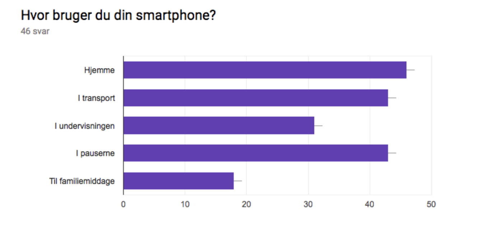
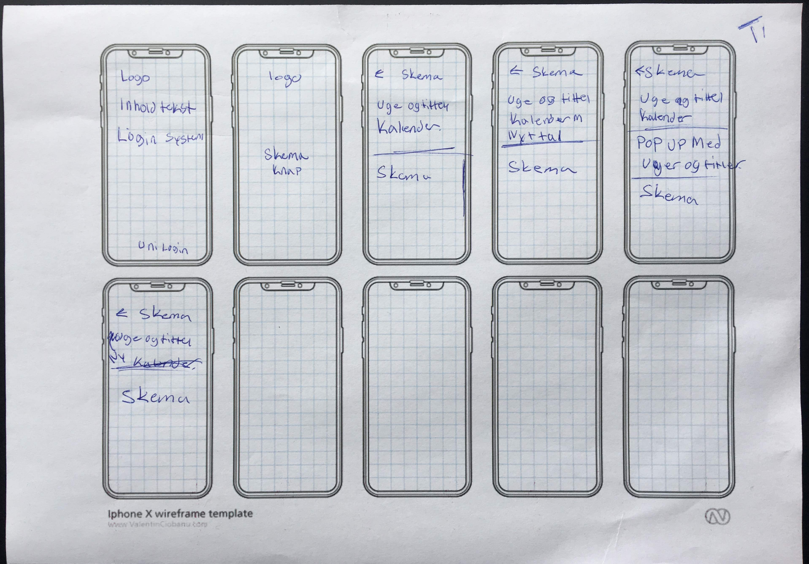

Ud fra spørge skemaet er der nogle ting som går igen på hvad folk bruger sin smartphone til:
Kommunikation, Høre musik , tjekke de sociale Medier , tjekke mails og tage billeder.
ud fra dette Diagram kan du se hvor folk bruger sin tlf mest henne

Ud fra spørge skemaet er der nogle ting som går igen , om de internationale studerende på kea.
Folk ser hinanden til fredags bar , kantinen intro ugen eller møder dem slet ik
Ud fra spørge skemaet er der stillet et spørgsmål om hvor forstiller du at du skal i praktik henne ?
Der var rigtig mange forskellig bud på hvor folk skulle hen.
Nogle ville gerne til udlandet i mens andre gerne ville i et reklamebureau, også er der nogle få der ikke har tænkt på det.
Ud fra spørge skemaet er der stillet et spørgsmål om Hvordan kan vi arbejde på tværs af linjer på MMD?og der var rigtig mange forskellige spørgsmål. Der var nogle der ikke havde en ide , imens andre skrev gruppe arbejde fælles projekter , eller lave nogle opgaver sammen
Experience map
Ud fra dette experience map valgte jeg at designe et skema.
senere hen i appen ville jeg gerne have at der kommer et forum, hvor man både ville kunne se om folk havde brug for hjælp ligsom facebook opslag også ville man også kunne se Hvilken ting der var udlejet i tech loungen, plus hvem der kom til fredagsbaren og hvilket event som var sat op til fredagsbaren og mange andre små features .
Problemformulering
Af at Kea medlemmer mangler hurtiger adgang til skemaet.
Prodotype sketch!
Prodotype